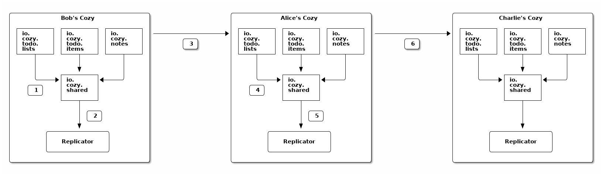
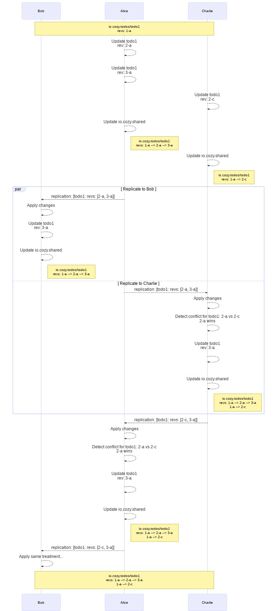
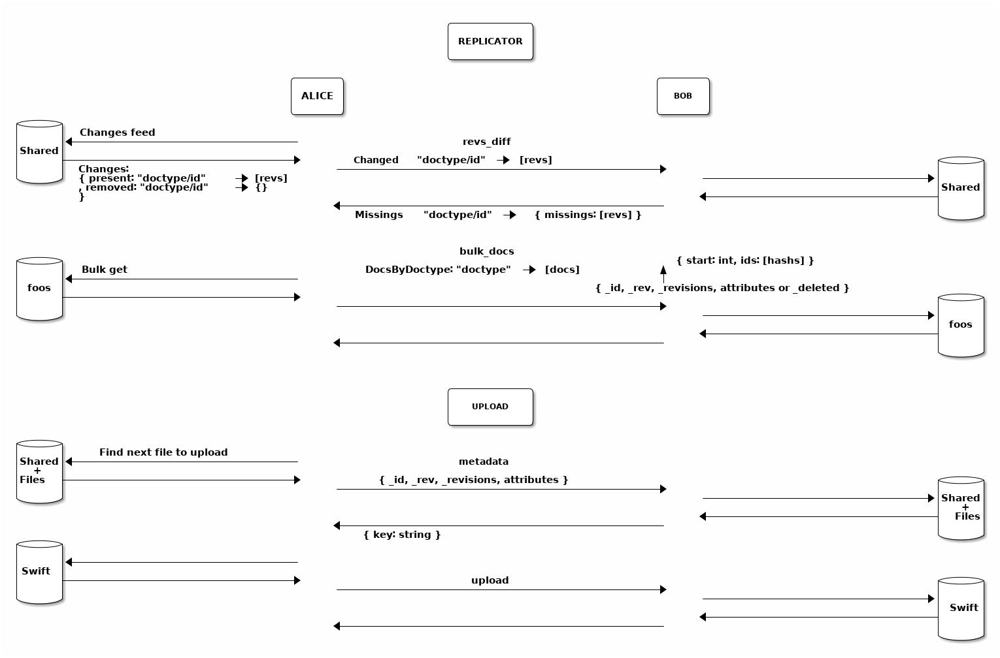
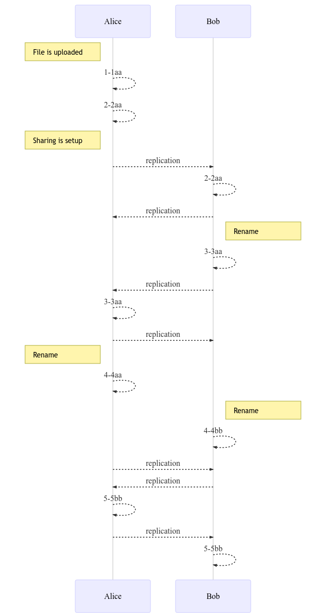
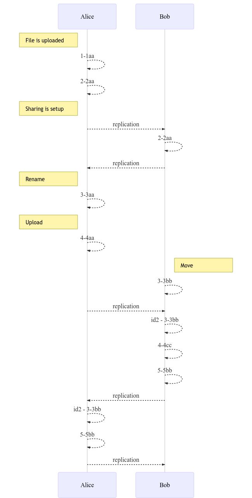

Synchronized sharing design¶
Baseline¶
Here we detail the baseline of the Cozy sharing design where files are synchronized between several cozy instances.
Note: shared drives is a newer feature, and it does not require to synchronize the files between the cozy instances. As such, it is more scalable but does not provide the same features as the synchronized sharing. In particular, when a shared drive is revoked, members no longer have access to a copy of the files in it.
Data sync¶
- The shared data is duplicated among members: it is both on the sharer’s cozy (the owner), and on the recipients’ cozy. This is a core difference compared to a federated sharing such as the one in NextCloud.
- The CouchDB replication protocol is used to synchronize the documents. It means that the documents will be same on the owner side and on the recipients side (“symmetric sharing”).
- The applications say what is shared, the cozy stack synchronizes that. The stack does the low-level work and gives primitives to the applications. The applications must use them in a responsible manner, and in particular, to avoid transitivity issues.
- The applications should know how to deal with documents’ conflicts, e.g. what to do with a document updated by several members at the same time with different content. At least, the default CouchDB behaviour to handle conflicts and select winning revisions should be acceptable if the applications don’t do anything to detect and resolve conflicts.
Contacts discovery¶
- A sharer may not know the addresses of the recipients’ cozy instances, but he/she has a way to send them an URL on his/her cozy to start the process.
Recipient preview¶
- A recipient can preview a sharing before accepting it if the application supports this option. Else, he/she will have only the description and rules to make his/her mind about accepting or refusing the sharing.
Specific data type support¶
- For files and folders, the documents replication process (the replicator) is customized to handle the specificities of the io.cozy.files doctype.
- The applications must be able to work with broken relationships between documents, which can happen if one shares a document without its relationships.
Safety principles¶
- First safety principle: when a user B accepts a sharing from user A, the documents that were on the user B’s cozy before the sharing are not sent to user A without an explicit action of user B (like moving a file to a shared directory).
- Second safety principle: when two users, A and B, are sharing documents, a change of a document on the user A’s cozy can’t make an exiting document of user B enter in the sharing.
Setup of a sharing¶
Step 1: the owner creates the sharing¶
One person decides to share something with other people from an application on her cozy. In our example, Alice wants to share a todo list with her friends, Bob and Charlie, and it is done from the Todo application. The application calls the stack with the rules for this sharing, including the documents to target and the rights granted to the recipients, to add/update/delete todos. It also specifies the contacts with whom to share by providing their identifiers. See the sharing schema for a complete description of the expected fields.
The stack persists an io.cozy.sharings document and sends
an email to the recipients (Bob an Charlie).
Step 2: a recipient accepts the sharing¶
A recipient, let’s say Bob, receives the email and clicks on the link. His browser shows him the Todo application on Alice’s Cozy so that he can preview the todo list, and a modal asks him if he wants to continue the sharing acceptation workflow. If he does, a form will ask him what is the address of his Cozy (the form can be pre-filled if he has already accepted another sharing in the past). After he has filled the form and submitted it, he is redirected on his Cozy. If he is not logged in, he has to login first. Then, a page describes him how the sharing will work and what technical permissions it implies. It also asks him to confirm the sharing. If he accepts, his instance will send to Alice’s instance the answer.
Step 3: the initial replication starts¶
Alice’s Cozy instance creates some tokens and sends them with other informations such as the response of the answer request from Bob’s instance. At this moment, both instances are ready to start to replicate data to the other instances. So, let’s do the initial replication.
Alice’s instance starts to fill the io.cozy.shared database with all the
documents that match a rule of the sharing (except the rules with
local: true), and create triggers for the future documents to be also added in
this database (the exact triggers depend of the parameters of the rules). And,
when done, it creates a job for the replicator, and setups a trigger for future
changes in the io.cozy.shared to start a replicator job. This mechanism is
further explained in the data sync section.
Bob’s instance also checks if any document matches a sharing rule. In most
cases, it won’t. But in some very special cases (e.g. a previous revoked sharing
on the same documents), there are some documents that match a rule. They are
added to the io.cozy.shared database, but with a conflict flag. They won’t
be replicated unless Bob accepts to in his Todo application. Triggers are also
added on Bob’s instance for filling the io.cozy.shared database, and to call
the replicator after that.
Note: there is a lock around the initial filling of the
io.cozy.shared database to avoid concurrency issues if two recipients accept
the sharing at the same time.
Data sync¶
As stated in the baseline, the shared data is copied among the databases of all the members for a sharing. Therefore, contrarily to centralized or federated sharing, where the same data is accessed by all members, extra work must be done to replicate changes between all members.
The replication mode is specified in a sharing rule for each document action: add, update or delete. It can be:
none: the changes won’t be replicated between members.push: only the changes made by the owner will be propaged to the recipients.sync: the changes made by any member are propagated to the other members.
See the sharing schema for more details and examples.
The data synchronization is based on the document’s revisions. Each time a
document is updated in database, a new revision is created with the following
format: 1-abc, where 1 is a number incremented at each new change and abc
a hash of the document.
The revisions history of each shared document is saved in a io.cozy.shared
document. This history is used to compare revisions between sharing members and
propagate updates. Hence, not only the shared documents are synced, but also
their whole revisions history through the io.cozy.shared database. See the
revisions syncing section for a complete example.
General workflow¶
In the following, we assume the a sync sharing for all actions between Alice,
Bob and Charlie.

Step 1: a todo item is added on Bob’s Cozy, a trigger is fired and it adds
the new document to the io.cozy.shared database
Step 2: a debounced trigger on the io.cozy.shared database is used to
start a replicator
Step 3: the replicator does the following steps
- it queries a local document of the
io.cozy.shareddatabase to get the last sequence number of a successful replication - with this sequence number, it requests the changes feed of
io.cozy.sharedwith a filter on the sharing id - the results is a list of document doctype + id + rev that is sent to Alice’s Cozy
- Alice’s Cozy checks which revisions are known, and send a response with the list of those that are not
- for each not known revision, Bob’s Cozy send the document to Alice’s Cozy (in bulk)
- and, if it’s all good, it persists the new sequence number in the local document, as a start point for the next replication
Step 4: the changes are put in the io.cozy.shared database on Alice’s Cozy
Step 5: it starts a replicator on Alice’s Cozy
Step 6: the replicator send the changes to Charlie’s Cozy, all the cozy instances are synchronized again!
Note: when a todo item is moved fron a shared todo list to a not shared todo
list, the document in io.cozy.shared for the todo item is kept, and the
sharing id is associated to the keyword removed inside it. The remove
behavior of the sharing rule is then applied.
Revisions syncing¶
Here, we detail the internals of the revisions-based syncing mechanism through an example: Alice, Bob and Charlie share a Todo with the id “todo1”. Note that in reality this id would be an UUID, but we give it a simple name for the sake of clarity.
This Todo had only one update (its creation), made by Alice that generated the
revision 1-a.
After the initial replication, all the members have a io.cozy.shared document,
with this sole revision as history. This history is
actually a tree: when a CouchDB conflict occurs, a new branch is created,
containing the losing revision, so we can keep track of it and avoid losing any
data. Note the document id is in the form <doctype>/<docid> to easily
reference the shared document. Here, it is io.cozy.todos/todo1.
In the sequence diagram below, we illustrate the steps occuring when Alice
generates updates. We also illustrate how a CouchDB can occur and how it is
handled, by making Charlie updating the same document than Alice at the same
time. This update leads to a conflict between the revisions 2-a, generated by
Alice, and 2-c, generated by Charlie: a winning revision is then elected
by CouchDB, 2-a, but 2-c is saved in another branch of the revision tree.
Thanks to it, the conflict is propagated to other members that will be able to
resolve it through the Todo application (by manually erasing or merging the
conflicted revision for instance).
Eventually, all members converge to the same state with the same docs and the same revisions histories.

CouchDB conflicts¶
A CouchDB conflict is when a document has conflicting revisions, i.e. it has at least two revisions branches in its revision history. Hence, these conflicts are made on the database level. By design, CouchDB can produce conflicts in its replication protocol, as the revision history is replicated and forced among nodes.
We detail here how a CouchDB conflict can be made.
In the particular case of files and folders, we implemented specific strategies
to avoid having to deal with conflicts at the application level: the stack is
able to prevent CouchDB conflicts for io.cozy.files documents and enforce
reconciliation when possible. We also detail what is
done when no reconciliation can be made.
Id transformations¶
Initially, we were using the CouchDB protocol revision as described above, but we have introduced a transformation of the identifiers for io.cozy.files, and later, we have generalized this transformation for all doctypes. It means that Alice and Bob have the same shared documents, but not with the same identifiers. The identifiers are transformed with a XOR, using a key exchanged when the recipient accepts the sharing.
In practice, it is useful when someone is revoked from a sharing, and accepts later the sharing again. It allows to avoid reusing the same identifiers for documents exchanged on the first sharing and on the second sharing, which can create some weird situations. For example, a cipher is shared between Alice and Bob when its revision is 3-aaa. Later, when the sharing is revoked, the document will be deleted on Bob’s instance (the ciphers are deleted on recipients when a sharing is revoked), which creates a revision 4-bbb. If Alice invites Bob again, and Bob accepts, the replication will sent the document from Alice’s instance to Bob’s instance with revision 3-aaa. CouchDB will say OK, but the revision 4-bbb will still be seen as a successor of 3-aaa, and for CouchDB, the document will still be deleted. Using different IDs for the first and second sharing fixes this issue.
Files and folders¶
Why are they special?¶
Files are special for several reasons. First and foremost, they have a binary attached to them that can be quite heavy. The stack also enforces some rules on them (e.g. a file can’t be added to a deleted folder) and has some specific code for the tree nature of files and folders (e.g. a permission on a folder is inherited on all the files and folders inside it, even if they are several levels below). Thus, the workflow explained just before is not compatible with the files.
As we need to introduce some code specific to the files, we have also wanted to
improve the sharing of files. First, we don’t want to force the recipients to
put the shared folder at exactly the same place as the owner. In fact, we think
that putting the shared folder in a folder called Shared with me is more
friendly. We also think that a file that has been shared in the past but is no
longer (the sharing has been revoked) can evolve on both the owner’s cozy and on
the recipients’ cozy in different ways, and in such a case, it’s more logical to
consider them as different files. These two reasons implies, on a technical
level, that the identifiers for files and folders are not the same on the owner
and the recipients of a sharing. The replicator will translate the identifiers
from one system to another during the replications. Of course, it will also
translate the id in the sharing rules, and the dir_id to preserve the
relationship between a file and its parent folder. The path attribute will be
seen as a cache, and recomputed when a cozy instance receives a folder document
from a sharing replication.
We will continue to have a replication as close to the CouchDB replication as possible. It means we synchronize a state, and not looking for the history of operations like cozy-desktop does. It is less accurate and can lead more often to conflicts. The cozy instances are expected to be online most of the time and have a short delay for replications: we think that the conflicts will happen only on rares occasions. This make acceptable to take this shortcut. And, in case of conflicts, we will preserve the content of the files (no data loss), even if it means duplicating the files.
How a sharing involving files works?¶
When a sharing involves a rule on the io.cozy.files doctype, a folder is
created on the recipients cozy where the files will be put. It is created inside
the Shared with me folder by default, but can be moved somewhere else after
that. The folder won’t be synchronized its-self later, and if the folder is
trashed, the sharing is automatically revoked. As it is not a reversible action,
a confirmation is asked before doing that.
Note: we will forbid the sharing of the root of the virtual file system, of
the trash and trashed files/folders, and of course the Shared with me folder.
The step 3 described above, aka the replicator, will be more complicated for folders and files. First change, it will work on two phases: 1. what can be synchronized without transfering the binaries first, and 2. the synchronization of files with a binary attached. Second change, the replicator will acquire the Virtual File System lock on the cozy instance where it will write things to ensure the consistency of what it writes. Third change, before inserting a folder or file in the database, the replicator checks that its parent exists, and if it’s not the case, it creates it. Last change, we will avoid CouchDB conflicts for files and folder by using a special conflict resolution process.
Sequence diagram¶

Conflict resolution¶
In the case of io.cozy.files documents, we prevent CouchDB conflicts to happen
by implementing specific strategies. Here, we detail the conflicts situations
where a resolution is possible:
- When two cozy instances have modified the same file concurrently
- Same for a folder
- When two files or folders are renamed concurrently to the same name inside the same directory
- When a file or folder is created or updated on cozy instance while the parent directory is trashed concurrently on another cozy instance.
For 1. and 2., we will reconciliate the changes except for a file with two
versions having a distinct binary (we rely on size and checksum to detect
that). In such a case, we create a copy of the file with one version, while
keeping the other version in the original file (the higher revision wins).
For 3., we say that the owner instance wins: the file with the name in conflict on the owner instance will keep its name, and the other file with the same name will be renamed. This rule helps to minimize the number of exchanges between the cozy instances, which is a factor of stability to avoid more conflicts.
For 4., we restore the trashed parent, or recreate it if it the trash was emptied.
Conflict with no reconciliation¶
When a file is modified concurrently on two cozy instances, and at least one change involve the content, we can’t reconciliate the modifications. To know which version of the file is the “winner” and will keep the same identifier, and which version is the “loser” and will have a new identifier, we compare the revisions and the higher wins.
This conflict is particulary tricky to resolve, with a lot of subcases. In particular, we try to converge to the same revisions on all the instances for the “winner” file (and for the “loser” too).
We have 3 sets of attributes for files:
sizeandmd5sum(they change when the content has changed)nameanddir_id(they change when the file is moved or renamed)created_at,updated_at,tags,referenced_by, etc.
For the first two sets, the operation on the Virtual File System will needs to reach the storage (Swift), not just CouchDB. For the third set, it’s easy: we can do the change at the same time as another change, because these attributes are only used in CouchDB. But we can’t do a change on the first two sets at the same time: the Virtual File System can’t update the content and move/rename a file in the same operation. If we needs to do both, it will generate 2 revisions in CouchDB for the file.
Note: you can see that using CouchDB-like replication protocol means that we have some replications that can look useless, just some echo to a writing. In fact, it is used to acknowledge the writing and is helpful for conflict resolutions. It may be conter-intuitive, but removing them will harm the stability of the system, even if they do nothing most of the time.
Example 1¶

Here, Alice uploads a file on her Cozy. It creates two revisions for this file (it’s what the Virtual File System does). Then, she shares the directory with this file to her friend Bob. When Bob accepts the sharing, the file is sent to his Cozy, with the same revision (2-2aa).
Later, Bob renames the file. It creates a new revision (3-3aa). The change is replicated to Alice’s Cozy. And we have a replication from Alice to Bob to ensure that every thing is fine.
Even later, Alice and Bob both renames the file at the same time. It creates a conflict. We have a first replication (from Alice to Bob), but nothing happens on B because the local revision (4-4bb) is greater than the candidate revision (4-4aa) and the content is the same.
Just after that, we have a revision on the opposite direction (from Bob to Alice). The candidate revision wins (4-4bb), but for files, we don’t use CouchDB conflict, thus it’s not possible to write a new revision at the same generation (4). The only option is to create a new revision (5-5bb). This revision is then sent to Bob: Bob’s Cozy accepts the new revision even if it has no effect on the file (it was already the good name), just to resolve the conflict.
Example 2¶

Like in the last example, Alice uploads a file and share a directory to Bob with this file, Bob acccepts. But then, several actions are made on the file in a short lapse of time and it generates a difficult conflict:
- Alice renames the file, and then uploads a new version with cozy-desktop
- Bob moves the file to a sub-directory.
So, when the replication comes, we have two versions of the file with different name, parent directory, and content. The winner is the higher revision (4-4aa). The resolution takes 4 steps:
- A copy of the file is created from the revision 3-3bb, with the new identifier id2 = XorID(id, 3-3bb).
- The new content is written on Bob’s Cozy: we can’t use the revisions 3-3aa (same generation as 3-3bb) and 4-4aa (it will mean the conflict is fixed, but it’s not the case, the filenames are still different), so a new revision is used (4-4cc).
- The file is moved and renamed on Bob’s Cozy, with a next revision (5-5bb).
- The two files are sent to Alice’s Cozy: 5-5bb is accepted just to resolve the conflict, and id2 is uploaded as a new file.
Special case: out and in again¶
Let’s look at a special case. Alice shares a folder with Bob and Charlie. It contains a directory, with a few files inside it. This directory has been synchronized, and Bob decides to move it somewhere else on its cozy instance that is not inside the shared folder, let’s say at the root. The sharing synchronization will move the directory to the trash for Alice and Charlie. Bob can continue to work on the files in this directory. If Charlie restores the directory from the trash, it will be put again in the sharing. And we can see that we have an issue: on Bob instance, we will have two copies on the files, at two different locations, but technically, they should have the same identifiers. It is not possible.
To avoid that, we have to change the identifier, or more precisely, delete a file and recreate it with a new identifier. It means losing historical versions and some other things like sharing by links. It is an operation that takes a lot of resources. So, we need to be careful in how we do that. And, like usual for the sharing, we need to take care of the stability and convergence of the replication algorithm.
With these constraints, the approache we have chosen is to put a copy of a file that was moved out of the sharing in the trash when this operation is replicated. For the member of the sharing that has made the operation, the file will be the same (no need to change how the VFS work), and it is only later, when this change is replicated to the other members that we will put a copy of the file in the trash and delete the file (this is managed by the sharing layer). Thus, the other members of the sharing will have a copy of the file, but not the original file (sharing by links won’t work on the copy for example), and the old versions of the file will be lost. We think it is an acceptable tradeoff between complexity, reliability, and matching the user expectations.
Still, it has an important limitation. If Alice and Bob moves a file from the shared directory to somewhere else at the same time, and later, one of them is moving again the file inside the shared directory, we will be in a bad situation, where the replication algorithm can’t synchronize the file. For the moment, we prefer to advance with this limitation, but we will have to take care of it later.
Schema¶
Description of a sharing¶
- An identifier (the same for all members of the sharing)
- A list of
members. The first one is the owner. For each member, we have:status, a status that can be:ownerfor the member that has created the sharingmail-not-sentfor a member that has been added, but its invitation has not yet been sent (often, this status is used only for a few seconds)pendingfor a member with an invitation sent, but who has not clicked on the linkseenfor a member that has clicked on the invitation link, but has not setup the Cozy to Cozy replication for the sharingreadyfor a member where the Cozy to Cozy replication has been set uprevokedfor a member who is on longer in the sharing
name, a contact namepublic_name, a public nameemail, the email addressinstance, the URL of the Cozyread_only, a flag to tell if the contact is restricted to read-only modeonly_in_groups, a flag that will be false if the member has been added as a single contactgroups, a list of indexes of the groups
- A list of
groups, with for each one:id, the identifier of the io.cozy.contacts.groupsname, the name of the groupaddedBy, the index of the member that has added the groupread_only, a flag to tell if the group is restricted to read-only moderevoked, a flag set to true when the group is revoked from the sharing
- Some
credentialsto authorize the transfer of data between the owner and the recipients - A
description(one sentence that will help people understand what is shared and why) - A flag
activethat says if the sharing is currently active for at least one member - A flag
owner, true for the document on the cozy of the sharer, and false on the other cozy instance - A flag
open_sharing:trueif any member of the sharing except the read-only ones can add a new recipientfalseif only the owner can add a new recipient
- A flag
drive, that is false for a synchronized sharing - Some technical data (
created_at,updated_at,app_slug,preview_path,triggers,credentials) - A flag
initial_syncpresent only when the initial replication is still running - A number of files to synchronize for the initial sync,
initial_number_of_files_to_sync(if there are no files to sync or the initial replication has finished, the field won’t be here) - A
shortcut_idwith the identifier of the shortcut file (when the recipient doesn’t want to synchronize the documents on their Cozy instance) - A list of sharing
rules, each rule being composed of:- a
title, that will be displayed to the recipients before they accept the sharing - a
doctype(and amimeif the doctype isio.cozy.files) - a
selector(by default, it’s theid) andvalues(one identifier, a list of identifiers, files and folders inside a folder, files that are referenced by the same document, documents bound to a previous sharing rule) local: by defaultfalse, but it can betruefor documents that are useful for the preview page but doesn’t need to be send to the recipients (e.g. a setting document of the application)add: a behavior when a new document matches this rule (the document is created, or it was a document that didn’t match the rule and is modified and the new version matches the rule):none: the updates are never propagated (the default)push: the updates made on the owner are sent to the recipientssync: the updates on any member (except the read-only) are propagated to the other members
update: a behavior when a document matched by this rule is modified. Can be:none: the updates are never propagated (the default)push: the updates made on the owner are sent to the recipientssync: the updates on any member (except the read-only) are propagated to the other members
remove: a behavior when a document no longer matches this rule (the document is deleted, or it was a document that matched the rule, and is modified and the new version doesn’t match the rule):none: the updates are never propagated (the default)push: the updates made on the owner are sent to the recipientssync: the updates on any member (except the read-only) are propagated to the other membersrevoke: the sharing is revoked.
- a
Example: I want to share a folder in read/write mode¶
- rule 1
- title:
folder - doctype:
io.cozy.files - values:
"ca527016-0d83-11e8-a580-3b965c80c7f7" - add:
sync - update:
sync - remove:
sync
- title:
Example: I want to share a playlist where I’m the only one that can add and remove items¶
- rule 1
- title:
playlist - doctype:
io.cozy.music.playlists - values:
"99445b14-0d84-11e8-ae72-4b96fcbf0552" - update:
none - remove:
revoke
- title:
- rule 2
- title:
items - doctype:
io.cozy.files - selector:
referenced_by - values:
"io.cozy.files/ca527016-0d83-11e8-a580-3b965c80c7f7" - add:
push - update:
none - remove:
push
- title:
io.cozy.shared¶
This doctype is an internal one for the stack. It is used to track what documents are shared, and to replicate changes from one Cozy to the others.
_id: its identifier is the doctype and id of the referenced objet, separated by a/(e.g.io.cozy.contacts/c1f5dae4-0d87-11e8-b91b-1f41c005768b)_rev: the CouchDB default revision for this document (not very meaningful, it’s here to avoid concurrency issues)revisions: a tree with the last known_revs of the referenced objectinfos, a map of sharing ids →{rule, removed, binary}rulesays which rule from the sharing must be applied for this documentremovedwill be true for a deleted document, a trashed file, or if the document does no longer match the sharing rulebinaryis a boolean flag that is true only for files (and not even folders) withremoved: falsedissociatedis a boolean flag that can be true only for files and folders when they have been removed from the sharing but can be put again (only on the Cozy instance of the owner)